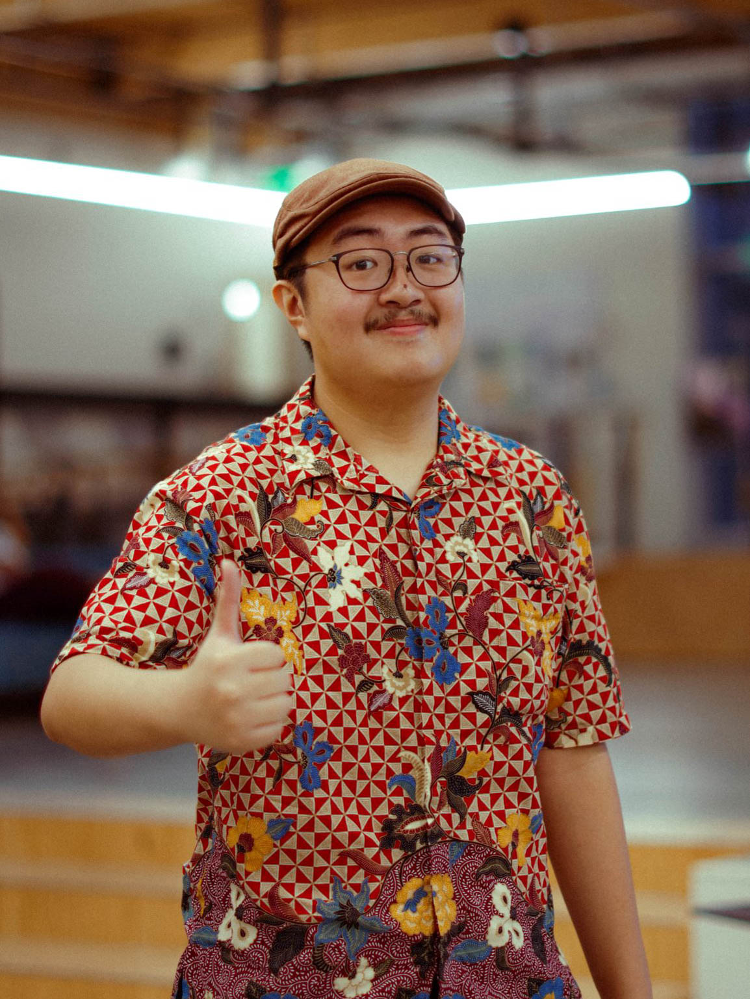

|

|
Hi! I'm Richard Karunia!
I am currently a sophomore at Georgia Institute of Technology majoring in Computational Media.
I am a photographer by day, programmer by night.
Born in Indonesia, I have always been someone who craved technology and its advancements. Living for so long on slow internet speeds and laggy computers, I leapt at any chance I had with high-tech equipment. For that reason, I've always loved cameras and computers. They are such marvelous inventions of the modern era and I am excited to both utilize and sharpen my skills in these fields.
|